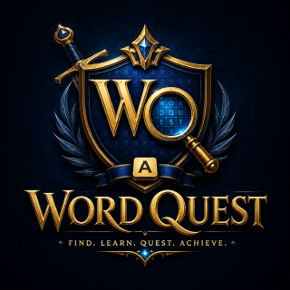

Quest map & boss levels
Six themed chapters with eight levels each. Unlock stages, earn stars, and take on a boss puzzle at the end of every chapter.
GAME DEVELOPMENT / FEATURED PROJECT
More than a word search. A vocabulary adventure built around discovery, progression, and play.
Word Quest turns classic word-finding challenges into a journey through six themed chapters, with rewards, achievements, bosses, and a growing collection of words learned.

THE EXPERIENCE / 01
A mix of puzzles, progression, and small victories designed to keep each session engaging.
Six themed chapters with eight levels each. Unlock stages, earn stars, and take on a boss puzzle at the end of every chapter.
Switch between Quick Play, Adventure, Time Rush, and Daily Challenge, with varying word puzzles, scores, and timed goals.
Earn coins, build streaks, collect achievements, and use hints, time boosts, shields, and other shop rewards.
Discover word definitions as you play, then revisit the words you've found in your personal vocabulary collection.
Choose an avatar, save your own progress locally, and return to your unlocked levels, collected stars, and achievements.
Custom menu and gameplay music, sound effects, keyboard controls, and settings for larger text, contrast, and reduced motion.
THE BUILD / 02
Word Quest uses HTML, CSS, and JavaScript for the interface, game logic, puzzle generation, player profiles, progression, and audio. The playable web edition is included directly in this portfolio for visitors to explore.
Browser play stores progress locally on your device. Audio starts when you interact with the game.
READY TO PLAY?